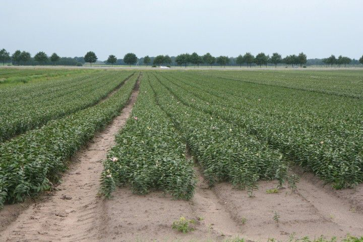

Bodem en stoffen
1. Inleiding
Kunnen we beter omgaan met stoffen bij bodembeheer in de landbouw wanneer we ze beter kennen? Dat is de vraag waar in het volgende op wordt ingegaan. Hoe kunnen we te weten komen wat stoffen eigenlijk zijn? En hoe kunnen we dat vertalen naar landbouwkundige maatregelen? Er zijn weinigen die zich met deze vragen bezig hebben gehouden. Na de ontdekking van het belang van voedingsstoffen richtte alle aandacht zich op de wijze van toepassing met het doel zo veel mogelijk voedsel te produceren. Toch is er ook gezocht naar andere benaderingen rond stoffen. Velen zijn hier op verschillende wijzen mee bezig geweest. De wijze waarop Goethe als het ware de plant ontdekte is ook toe te passen op stoffen. Twee namen vallen in dit kader extra op: Frits Julius en Manfred van Mackensen. Julius heeft een en ander beschreven in het boek “Grundlagen einer phänomenologischen Chemie” (Julius, 1965) en Mackensen in vele publicaties, vaak gericht op het onderwijs. Een samenvattende publicatie is “Prozesschemie aus spirituellem Ansatz” (Mackensen, 1994).
Hier volgen enkele ideeën rond de weg om inzicht te krijgen in de rol van stoffen bij bodemkundige vraagstukken. Ook volgt een stukje geschiedenis over pogingen in het verleden.
De gebruikelijke wijze om ergens inzicht in te krijgen, is eerst een hypothese te formuleren en deze vervolgens te toetsen. Als voorbeeld de werkwijze om de hoogte van de stikstofbemesting te bepalen. De vraag is hoeveel stikstof er met mest moet worden gegeven. Door nu op proefvelden verschillende hoeveelheden stikstofhoudende mest te geven en met behulp van voldoende herhalingen dit statistisch te verwerken, wordt duidelijk welke hoeveelheid stikstof het beste is. Op deze wijze komen we tot wat de beste bemesting lijkt. Op zich lijkt hier niets mis mee. Wanneer we met een dergelijke werkwijze werken is er toch wel iets opmerkelijks aan de hand. We werken met stikstofmest, met gewassen en een specifieke bodem en van alle drie weten we eigenlijk nog niets wanneer we dit experiment uitvoeren. Het enige wat we weten is bij welke bemesting in deze specifieke situatie de plant het hardste groeit. Mogelijk zouden we veel beter te werk kunnen gaan wanneer we wat meer wisten van waar we mee bezig zijn.
2. Stikstof en koolstof
Teveel stikstof is niet goed en teveel koolstof ook niet. De basis van bodembeheer is een dynamiek tussen beide te krijgen en dan ontstaat er iets heel moois.
2.1. Stikstof
Het element stikstof is overal om ons heen en we ademen er iedere dag grote hoeveelheden van in. Toch valt stikstof in het geheel niet op. Dat geldt ook voor zuurstof, maar daarvan merk je snel dat je tekort komt wanneer de omgeving te weinig zuurstof bevat. Als kind kon je dat ervaren door via een stofzuigerslang adem te halen; dan werd je benauwd. In theorie kun je stikstof wel ervaren door lucht in te ademen met een hoger zuurstofpercentage dan de gebruikelijke 20%. Dan wordt zuurstof giftig en stikstof heeft dus de rol om een te sterke werking van zuurstof wat in te perken. In het dagelijks leven is stikstof evenwel de stof waar je eigenlijk het minste van merkt. Je zou kunnen zeggen dat stikstof zich in de lucht thuis voelt en niet zo nodig op de voorgrond hoeft te treden.
Stikstof binden
Nu ga je stikstof binden aan waterstof. In een stikstofbindingsfabriek is dat te zien omdat in de wand van de cilinder waarin dat gebeurt een raampje zit en het proces zichtbaar wordt. Je ziet dan een roodgloeiend rooster en er boven een roodgele vlam. Lucht die ontdaan is van zuurstof en bijna alleen uit stikstof bestaat, wordt gebonden aan waterstofgas dat gemaakt wordt uit aardgas. Fijne ijzerdeeltjes en wat kali en aluminiumoxide dienen hierbij als katalysator. Het gebeurt onder hoge druk en bij ca 500 °C. Er is voor dit proces veel energie nodig: voor 1 kg zuivere stikstof ruim 1 m3 aardgas. De ammoniak die zo ontstaat kan verder in het proces eenvoudig worden omgezet in nitraat.
Dit is de grondstof voor kunstmest, maar ook voor explosieven en wanneer deze explosieven tot ontploffing komen wordt duidelijk hoeveel energie er in deze stikstofhoudende stof is gestopt. Het is wonderlijk dat op een akker met vlinderbloemigen dezelfde binding van stikstof aan waterstof plaatsvindt en alleen het gezoem van wat bijen te horen is. Ook hier is evenwel zeer veel energie nodig die daar geleverd wordt door het blad dat met zonlicht, water en koolzuur de energierijke suikers maakt. Wanneer de stikstofverbindingen in de bodem komen komt er dus veel energie in de bodem. Bij explosieven zien we dat duidelijk, maar is dat bij stikstof in de bodem ook te zien?
Voordat we op een antwoord op deze vraag ingaan, is het van belang te realiseren, dat stikstof in gesteenten nauwelijks voorkomt. Stikstof tussen gesteentes bevindt zich in een voor stikstof vreemde wereld en het is te verwachten dat stikstof weer terug naar de lucht wil. Mackensen (1994) noemt stikstof een beweeglijk luchtelement dat zich niet makkelijk laat veranderen en wanneer het wel verandert, kiest het in nood via een explosie de weg naar de lucht. Gebonden stikstof is als het ware een “bom” vol energie die zich bevindt in een wereld waar die zich niet thuisvoelt. Hoe ga je met zo’n situatie om? Dit is best een belangrijke vraag want het antwoord bepaalt wel de voeding van de mens op de wereld, het schoonhouden van het oppervlaktewater en het zuinig omgaan met fossiele energie. Iets wat barst van de energie voelt zich niet thuis in zijn omgeving en geeft problemen. Moeten we bij een psycholoog te rade gaan? Misschien wel, maar laten we eerst eens kijken hoe stikstof zich uit in de natuur.

Ontploffing van een stikstofbindingsbedrijf in Texas, in 2013
Stikstof in de landbouw
In het beheer van de bemesting is stikstof moeilijk te grijpen. Stikstof is een van de meststoffen die het sterkst de productie bepaalt, maar in de bodemanalyse was nooit een stikstofanalyse te vinden. Tegenwoordig wordt het stikstofleverend vermogen, het NLV, vaak wel aangegeven, maar dat wordt berekend uit het totale stikstofgehalte. De stikstof die jaarlijks vrijkomt uit de totale stikstof is slechts 1% van de alle stikstof in de organische stof in de grond en deze inschatting van het stikstofleverend vermogen is zeer onbetrouwbaar. Stikstof, bomvol energie, gaat alle kanten op en is niet met eenvoudige regels te pakken te krijgen. Met simulatiemodellen gaat het wel wat beter, maar de ingewikkeldheid van de processen maakt een nauwkeurige modellering onmogelijk. Er gebeurt van alles met stikstof in de grond: bij weinig lucht gaat nitraat snel over in ammonium en ammonium kan in enkele dagen bij voldoende temperatuur weer overgaan in nitraat. De stikstof uit mest- en plantenresten verschijnt eerst als ammonium die zich kan binden aan klei en humus via adsorptie. Ammonium kan tussen kleiplaatjes kruipen en is dan gefixeerd. Nitraat spoelt heel snel uit bij regen want nitraat bindt zich vrijwel nergens aan. Is er gebrek aan lucht, dan kan nitraat als stikstofgas of lachgas de lucht in gaan. Op zich is dit interessant. Wanneer er lucht in de grond zit kan stikstof zich wel enige tijd in de bodem handhaven, wanneer die ontbreekt krijgt stikstof het als het ware benauwd en zoekt zelf de lucht weer op. De veelheid aan vormen en processen past in het beeld van veel energie en niet thuisvoelen. Hoe krijg je nu orde in deze chaos en wordt die beheersbaar? Is koolstof hierbij een oplossing? In de volende paragraaf gaan we dieper in op koolstof.
Samenvattend
Stikstof in de landbouw-gaat alle kanten op. Gaat de lucht weer in bij luchtgebrek, spoelt uit bij neerslagoverschot.-breekt de organische stof af.-komt in de bodem in veel vormen voor.-is bij bodemanalyse niet goed te pakken.-geeft explosieve groei, planten worden ziektegevoelig en verliezen smaak.Stikstof geeft beweging. Veel bij mens, dier en bacterie en weinig bij plant en schimmelAmmoniakemissie is niet goed te metenStikstof, vol energie, voelt zich in de bodem niet thuis
Koolstof
Koolstof zit in de lucht, vooral de lucht dicht bij het aardoppervlak, maar het grootste deel van de koolstof op aarde zit in de aardkorst in verschillende vormen als steenkool, olie, veen en dergelijke. Interessant is dat wanneer grote hoeveelheden plantenresten dieper in de aarde komen, de verschillende stoffen in de plant, zoals stikstof en zuurstof, verdwijnen. Alleen de koolstof vindt het blijkbaar prima om op 1000 meter of dieper in de aarde te blijven.In de plant is koolstof overal aanwezig. Bijna alle stoffen in de plant bevatten koolstof. Die koolstof is afkomstig uit de lucht en bij de fotosynthese in de plant ontstaan eerst suikers. Een suiker is een wit poeder dat makkelijk in water oplost, is daarom goed transporteerbaar en speelt overal in de plant een belangrijke rol. Uit suikers kan cellulose worden gevormd. Celwanden bestaan voor een deel uit cellulose en geven hier stevigheid aan. Het koolstofgehalte van cellulose is hoger dan dat van suiker. Een volgende fase is de vorming van houtstof, lignine, dat nog weer meer koolstof bevat. Cellulose kennen we van papier en cellofaanzakjes. Het is lichtdoorlatend en flexibel. Houtstof zit in alle planten en geeft samen met cellulose stevigheid. Die stevigheid is wat te vergelijken met gewapend beton. Cellulose bestaat uit vezels, te vergelijken met het ijzervlechtwerk gericht op trekkrachten en lignine is de vulstof, gericht op druk weerstaan. Wanneer plantenresten in de grond komen worden ze afgebroken. Suiker gaat heel snel, cellulose wat trager en lignine zeer traag.
Steenkool
Stikstof en koolstof in de landbouw
Ik heb eens een veehouder horen zeggen dat landbouw eigenlijk de kunst is om met stikstof en koolstof om te gaan. Er komt natuurlijk nog wel wat meer bij kijken, maar het is interessant om eens naar deze visie te kijken. In het voorgaande zagen we dat stikstof vooral in de lucht zit en koolstof vooral diep in de aarde. In de bouwvoor komen ze samen en de wijze waarop is afhankelijk van hoe de teler dat doet. Koolstof heeft de neiging om in koolstofrijke verbindingen te verstarren. Cellulose en suiker kunnen veel beter aan de bodemprocessen deelnemen. Stikstof heeft de neiging om uit de bodem te verdwijnen. Uitspoelen als nitraat of overgaan in stikstofgas. In eiwitachtige verbindingen neemt stikstof deel aan de bodemprocessen.Landbouw wordt hiermee als het ware kunst. Twee stoffen, stikstof en koolstof, die ieder hun eigen eenzijdigheid hebben en in hun eentje niet in staat zijn om iets moois, iets vruchtbaars te maken, worden in de landbouw met elkaar in contact gebracht en kunnen dan iets heel nieuws tot stand brengen. Ze kunnen een grond maken waar een plant op groeit die een hoge voedingskwaliteit heeft.Niet altijd lukt dat. Hieronder volgen voorbeelden van situaties waar het niet goed ging, met daarbij enkele ideeën hoe het beter had gekund en voorbeelden van waar het wel lukt.
Voorbeeld 1 a, Stikstof overheerst; drijfmest Leusden
Een enkeerdgrond bij Leusden (Den Treek)
Een overmaat van stikstof uit drijfmest heeft ertoe geleid dat de makkelijk verteerbare organische stof als koolstofbron is gebruikt. Deze organische stof verzorgde de binding van de zanddeeltjes onderling. Nu die binding er niet meer is, ligt het zand als losse deeltjes aan het oppervlak.
Bovenstaande foto is gemaakt op een maïsakker in de jaren 80 van de vorige eeuw. In die tijd was er nog geen beperking aan de maximaal te geven hoeveelheid mest en dat was de reden dat op dit bedrijf bij Leusden op een wat hoger gelegen perceel veel drijfmest werd gegeven omdat de lagere en natte gronden een deel van het jaar niet berijdbaar waren. Drijfmest bevat veel makkelijk beschikbare stikstof. In de grond heeft het bodemleven bij een grote drijfmestgift een overmaat aan stikstof tot zijn beschikking en kan daar zijn eiwitrijke lichaamssubstantie mee opbouwen, maar er zijn in verhouding te weinig koolstofrijke verbindingen als energiebron. Het gevolg is dat het bodemleven de makkelijk omzetbare koolstofrijke verbindingen in de organische stof van de bodem gaat aanspreken. Dat is nu net de organische stof die zanddeeltjes aan elkaar kit. Door de afbraak van deze organische stof komen de zanddeeltjes los te liggen en verspoelen ze bij regen. Als een witte zandlaag zien we ze aan de oppervlakte liggen. Dit proces trad op grote schaal op zandgronden op, maar ook op zavelgronden. De grote drijfmestgiften zijn nu niet meer toegestaan, maar het proces treedt, zij het wat minder sterk, overal nog op waar een overmaat aan stikstofrijke verbindingen is. Ook kunstmeststikstof kan dit proces op gang brengen. Omdat de makkelijk verteerbare organische stof vaak stikstofrijk is, kan het zijn dat er meer stikstof vrijkomt dan er met de mest gegeven is. Dit wordt ook wel “priming effect” genoemd (Kuzyakova, 2000).
Voorbeeld 1 b, Stikstof overheerst, lelieperceel Beilen, Drenthe

Op dit lelieperceel is op de voorgrond wit zand zichtbaar dat de binding met de humus is verloren omdat de actieve kittende organische stof door eenzijdig gebruik van stikstofrijke drijfmest is verdwenen. In de verte in het lager liggende gedeelte een donkere vlek. Zie volgende afbeelding.
Foto van het laaggelegen gedeelte. Dit is zeer oude heidehumus met voor de landbouw minder gunstige smerende eigenschappen. Deze is zeer koolstofrijk en bestand tegen omzetting. De actieve humus die de zanddeeltje aaneen kitte is actief en minder stabiel en verdwenen.
Voorbeeld 1c, Stikstof overheerst, preiteelt bij Kaatsheuvel in NoordBrabant
Preiteelt in Noord-Brabant bij Kaatsheuvel
Ook hier door toepassing van veel drijfmest een scheiding tussen witgebleekt zand en zwarte koolstofrijke zeer oude humus met ongunstige eigenschappen.
Voorbeeld 2. Stikstof overheerst; proefveld Mest als Kans, Lelystad
Op een kalkrijke zavelgrond met veel bodembewerkingen is het moeilijk om het organischestofgehalte te verhogen.
Voorbeeld 3. Koolstof overheerst; compost Kaatsheuvel
Champost op een perceel waar preiteelt plaats zal vinden.
Te heet geworden champost in detail. Champignonmest die erg heet is geweest tijdens de bewaring en veel makkelijk verteerbare stikstofrijke verbindingen zijn als gas de lucht ingegaan. Koolstofrijk stro overheerst.
Resten champost uit vorige jaren die niet verteren.
Resten van champignonmest na enkele jaren. Ze verteren nauwelijks en blijven in de grond liggen zonder dat er een wisselwerking met de omliggende grond ontstaat. Het karakter van koolstof komt naar voren. Verstarring die lang kan duren.
Voorbeeld 4. Koolstof overheerst; Tongeren, België, wintertarwe op löss
Ondergeploegde gewasresten
Wat is hier aan de hand? Op dit tarweperceel bij Tongeren in België stond vorig jaar korrelmais. De maïs is geoogst en resten van stengels, blad en kolven zijn ondergeploegd. Dit overwegend koolstofrijk materiaal is in een compacte laag op ca 20 cm diepte terecht gekomen en verteert niet, maar conserveert. De beworteling van de ondergrond wordt erdoor belemmerd. De bodem heeft te weinig bodemleven en stikstofrijk materiaal om de processen op gang te brengen. Meer egaal en minder diep door de grond brengen en combineren met een bemesting van wat drijfmest, had kunnen voorkomen dat koolstof zo duidelijk zijn karakter kon tonen.Op deze plek gaat het om twee dingen. Enerzijds is er het probleem dat er een overmaat aan koolstof aanwezig is en te weinig stikstof; anderzijds is er het probleem dat de grond humusarm en verdicht is en er niet voldoende zuurstof voorhanden is. Er kan onvoldoende ademing plaatsvinden. De mogelijkheid om te kunnen ademen en een goede verhouding tussen koolstof en stikstof zijn twee belangrijk elementen bij een vruchtbare bodem.
Voorbeeld 5. Koolstof en stikstof in blijvend grasland; BenschopIn de biologische landbouw is grasland met een voldoende aandeel klaver essentieel. De klaver bindt stikstof uit de lucht. Deze stikstof komt ook beschikbaar voor het gras en zo kan een opbrengst van het grasklaver-mengsel van ca 15.000 kg droge stof per ha per jaar ontstaan. Door de wisselwerking tussen gras en klaver treedt ook een verbetering van de bodemkwaliteit op. De bodemstructuur verbetert en de beworteling van de bodem wordt intensiever. De stikstofrijke klaver hoort evenwel thuis in een omgeving waar veel gebeurt, bijvoorbeeld daar waar regelmatig geploegd wordt. Wanneer de bodem van een grasland niet regelmatig bewerkt wordt en grasklaver niet opnieuw ingezaaid wordt, verdwijnt de klaver. Het koolstofrijke gras gaat overheersen in deze “rustige” omgeving en verbetert de bodem verder, maar zonder de klaver als stikstofbron. De opbrengst is daarom niet zo hoog als in de klaverrijke fase en wordt op een gegeven moment te laag om een goed functionerend bedrijf in stand te houden.De oplossing is niet gemakkelijk maar het gras met een wiedeg bewerken en klaver bijzaaien is een mogelijkheid (van Eekeren, 2012). De bewerking met de wiedeg betekent dat de “rust” wordt doorbroken en de zode enigszins bewerkt wordt. Verder moet de pH niet te laag zijn. Een wat hogere pH stimuleert de processen in de bodem en brengt beweging in de bodem. Verder is een goede kaliumvoorziening van belang. Wanneer dit allemaal niet lukt, is grondig beweging brengen in de bodem de oplossing. Dit betekent ploegen en opnieuw inzaaien, maar dit betekent ook een achteruitgang van de bodemkwaliteit.

Grasland op zware klei bij Benschop waar de klaver vrijwel uit verdwenen is
In het eerste jaar na inzaai een goed groeiend gewas met gras en klaver
de bodem onder de oude wei heeft een goede structuur en een goede beworteling.

de bodem onder de recent ingezaaide grasklaver heeft een matige beworteling en matige bodemstructuur
Voorbeeld 6. Stikstof en koolstof in evenwicht: synthese; Marle (bij Deventer)
Op de voorgrond proefveld met gras en klavercombinaties bij Marle langs de IJssel.
Bij Marle langs de IJssel kan bij een proef waarbij klaver, gras en grasklaver werden vergeleken, de invloed op de bodem van deze drie gewastypen worden bestudeerd (van Eekeren et. al., 2009, 2010).Na twee jaar waren er duidelijke verschillen bij beworteling, bodemstructuur en bodemleven.Op de volgende foto’s is een omgekeerde plag van 20x20 cm op 20 cm diepte te zien
Alleen klaver. De grond is sterk verdicht, maar er zijn wel regenwormen en wormgangen.
Wanneer er uitsluitend klaver wordt ingezaaid, blijft de grond verdicht omdat klaver weinig wortels maakt. De pendelende worm, lumbricus terrestris, vindt zijn
voedsel aan de oppervlakte en maakt verticale gangen in de verdichte grond.
Klaver en gras. Wortels, goede bodemstructuur, regenwormen en de hoogste opbrengst. Wanneer er een mengsel van gras en klaver wordt ingezaaid, gebeurt er iets wat gras en klaver afzonderlijk niet kunnen. Er zijn veel wortels, er zijn wormen (nu in twee soorten: links lumbricus terrestris en rechts a. calliginosa) en de opbrengst is hoger dan bij de gras- of de klavervariant.
Alleen gras. Veel wortels , een goede structuur en weinig regenwormen.
Dat wortels belangrijk zijn voor de bodemstructuur laat de variant met alleen gras zien. Hier zijn veel wortels. Er zijn weinig regenwormen, omdat vlinderbloemigen (en dierlijke mest) vooral regenwormen stimulere
Voorbeeld 7. Vaste mest, drijfmest en bodemleven, stikstof en koolstof wel en niet in evenwichtBij voorbeeld 1 zagen we dat drijfmest een ongunstige invloed op de bodem kan hebben. Geheel anders is dat wanneer er naast de stikstofrijke drijfmest veel koolstofrijk gras en graswortels aanwezig zijn. Regenwormen kunnen dan gestimuleerd worden. Minder dan bij vaste mest, maar meer dan bij compost waar wat drijfmest aan is toegevoegd en meer dan bij minerale bemesting (zie tabel).
Proefveld Bakel (grasland op zand)Mestsoort gram regenwormen per m2NPK 125Compost met drijfmest 144Drijfmest 231Stalmest 269
Voorbeeld 8. Stikstof en koolstof in evenwicht: synthese;Boomgaard bij Tiel
Dit is de bodem onder een hoogstamboomgaard bij Tiel. Hier zien we het resultaat van eeuwenlange synthese tussen stikstof en koolstof. Stikstof is afkomstig van klavers die in het gras groeiden en van mest die de koeien produceerden die in de boomgaard liepen. Koolstof is vooral afkomstig van het gras dat in de hoogstamboomgaard groeide. Het resultaat is een van de mooiste bodems ter wereld. De humushoudende laag is meer dan 60 cm dik. De oorspronkelijke gelaagdheid die onderin het profiel nog te zien is, is door het bodemleven verdwenen. De donkere verticale strepen en de stippen zijn de gangen van regenwormen. De wortels kunnen diep de grond in. Deze grond is eigenlijk het ideaal waar ieder bodembeheerder naar moet streven. Wat hij dan moet doen is hier ook te zien. Breng voldoende verteerbare koolstofrijke verbindingen in de grond (hier het gras) en breng voldoende stikstof in de grond (hier mest en klavers) en laat de natuur het werk doen (hier onder meer de regenwormen).
Conclusie
Er zijn gronden waar stikstof veel aandacht moet hebben. Op andere gronden geldt dit voor koolstof. Ook zijn er gronden die van nature of door langdurige landbouwcultuur een evenwicht, een doordringing, tussen beide laten zien. Bij deze laatste gaat het om onderhoud van het evenwicht. Links een kalkrijke lichte grond met weinig koolstof. Rechts een podzolgrond met verdichting door koolstof waar regenwormen al wat aan doen. Midden de grond die de extremen verbindt.
Maatregelen
Uit het voorgaande blijkt dat bij een goed beheer van de bodem de wisselwerking tussen stikstof en koolstof van belang is. Bij maatregelen om dit te bereiken hoeft niet direct gedacht te worden aan het aanvoeren van stikstof of koolstof in een bepaalde vorm. Bijna iedere maatregel rond de bodem heeft wel op enige manier invloed op de genoemde wisselwerking. Zo ontstaat door intensieve bodembewerking een omgeving waar koolstof niet thuishoort en verdwijnt, terwijl stikstof in een actieve vorm overgaat en bijvoorbeeld opgenomen kan worden door de plant. Het achterwege laten van bodembewerking betekent dat koolstof kan ophopen. Het is een omgeving die past bij koolstof. Stikstof voelt zich hier niet thuis vervluchtigt naar de lucht of spoelt uit naar het grondwater.Vanuit dit gezichtspunt zijn vele teeltmaatregelen te beoordelen:
- Vaste mest is overal goed, maar de wenselijke composteringsduur wisselt per bodemtype-Laat drijfmest zo snel mogelijk in contact komen met koolstofrijke verteerbare materialen (niet vlinderbloemige groenbemesters, graan, gras)- Meng kippenmest en geitenmest met houtachtige materialen-Teel vlinderbloemigen in een mengsel met gras-Wees voorzichtig met maaimeststoffen op arme grond-Let bij de vruchtopvolging op een evenwicht tussen koolstof- en stikstofrijke gewassen-Bodembewerking betekent: stikstof actief inzetten en koolstof verliezen-Breng stikstof, overal waar dit vrij komt in de landbouw, direct in contact met verteerbare koolstof
Literatuur
Bockemühl, J., 1982. Levensprocessen in de natuur. Vrij Geestesleven, Zeist.Bockemühl, J., 1984. Het stervende bos. Louis Bolk Instituut.Bockemühl, J., 1992. Elementen en ethersoorten. Louis Bolk Instituut.Dam, J. van, 1999. Het zesvoudige pad. Vrij Geestesleven, Zeist.Eekeren, N.J.M. van, 2012. Zorgen om klaver. Ekoland 3 p 14,15.Eekeren, N.J.M. van, J.G. Bokhorst, L. Brussaard., 2010. Roots and earthworms under grass, clover and a grass-clover mixture. p. 27-30. In 19th World Congress of Soil Science, Soil Solutions for a Changing World. Brisbane, Australia. 1 - 6 August 2010Eekeren, N. van, Liere, D. van, Vries, F. de, Rutgers, M., Goede, R. de, Brussaard, L., 2009. A mixture of grass and clover combines the positive effects of both plant species on selected soil biota. Applied Soil Ecology 42, 3, p. 254-263.Julius, F.H., 1965. Grundlagen einer phanomenologischen chemie. Verlag freies Geistesleben, Stuttgart.Y. Kuzyakova, J.K. Friedelb, K. Stahra, 2000. Review of mechanisms and quantifcation of priming effects. Soil Biology & Biochemistry 32, 1485 1498Mackensen,M . von. 1994. Prozesschemie aus spirituellem Ansatz. Pädagogischen Forschungsstelle Abt. Kassel. Bildungswerk Beruf und Umwelt Kassel.Marti, T., 1997. Mensch und Landschaft eines alpinen Hochtales, Bern/Stuttgart.Matthijsen, M.C., 2007. www.Paidos-boeken.nlPoppelbaum, H.Tier-Wesenskunde, Dornach, 1954; A New Zoology, Dornach 1954Romunde, D. van, 2000. Over vormende krachten in de plantenwereld. Louis Bolk Instituut Driebergen.Schad, 1971. Säugetiere und Mensch, Stuttgart.Steiner, R. 1917. Von Seelenrätseln (GA 21), Dornach 1983Steiner, R. 1925. Geisteswissenschaftliche Grundlagen zum Gedeihen der Landwirtschaft (GA 327), Dornach, 1999.Steiner, R. 1917. Mijn levensweg (GA 28). Vrij Geestesleven, Zeist, 1993.Suchantke, A. 1994. Metamorphosen im Insektenreich, Stuttgart.Suchantke, A. 2009. Dreigliederung, Synorganisation und Co-Evolution. Die Drei 1/2009.Suchantke, A., 2002. Metamorphose – Kunstgriff der Evolution. Freies Geistesleben, Stuttgart.Thienemann, A. (1956). Leben und Umwelt - Vom Gesamthaushalt der Natur. Hamburg: Rohwolt Taschenbuch Verlag.Vahle, 1998 . Auf der Suche nach der Leitidee der nordwestdeutschen Kulturlandschaft, in: A. Suchantke (Hrsg): Goetheanistische Naturwissenschaft, Bd. 5: Ökologie, Stuttgart.
Fosfor
Bij veel drukte merk je niet veel meer van fosfor. Bij veel rust in de omgeving wordt fosfor actief. Goed op letten bij fosforbeheer.
Actueel januari 2015: eerste resultaten fosforonderzoek op Zonnehoeve in ZeewoldeFosfor en wereldvoedselvoorziening; wat leert Zonnehoeve ons?Op het bedrijf Zonnehoeve in Zeewolde, Flevoland, wordt sinds 1983 geteeld met een lage aanvoer van fosfaat en een extreem laag gehalte aan beschikbaar fosfor in de grond. In 2013 is hier nader onderzoek naar gedaan door het Louis Bolk Instituut. (Rietberg en Timmermans, 2014).De beschikbaarheid aan fosfaat, het Pw-getal, was sinds 1983 onder de 10 mg P2O5 per liter. In 2013 was het op de onderzoekslocatie 5,8 mg P2O5 per liter. In de akkerbouw moet deze waarde 25-45 mg P2O5 per liter zijn. De waarde 25 mg P2O5 per liter wordt als kritieke waarde gezien (Dekker en Postma, 2008). Uit bemestingsproeven in 2013 bij tarwe en grasklaver bleek evenwel dat er geen fosfaatgebrek was.Het onderzoek wijst erop dat er in de bodem mechanismen zijn om fosfaat beschikbaar voor de plant te maken die op het moment sterk onderschat worden. Een literatuurstudie naar telen bij lage fosfaatniveau’s uit 2012 (Timmermans e.a., 2012) wees ook in deze richting.
Mechanismen die uit onderzoek bekend zijn maar in het beleid te weinig aandacht krijgen zijn:
- Planten gaan het wortelsysteem aanpassen op zoek naar fosfor. Alleen fosfor binnen 1-2 mm van een wortel is beschikbaar.
- Planten gaan dieper wortelen.-Het sterke fosforvrijmakende vermogen van vlinderbloemigen draagt bij aan een grotere fosforbeschikbaarheid van volggewassen.
- Organisch gebonden fosfor is na mineralisatie een belangrijke bron. Op Zonnehoeve bleef het totale fosforgehalte van de grond gelijk, maar het percentage organisch gebonden fosfor steeg van 21% naar 32% in 30 jaar.
- De aard van de bacteriepopulatie rond de wortels speelt een rol.
- Vorming van het fosfaatvrijmakende enzym fytase nabij de wortels treedt op.
- Mycorrhiza’s vergroten het worteloppervlak.-Afscheiding van zuren door de wortels speelt een rol.
- Diverse andere mechanismen spelen een rol. Vooral uit onderzoek in natuurlijke vegetaties blijkt dat in de plantenwereld ook nog veel andere mechanismen belangrijk kunnen zijn.
Het onderzoek op Zonnehoeve toont aan dat er een bredere aanpak van het onderzoek naar de fosfaathuishouding nodig is. Bodemlaboratoria kunnen alleen onderzoek doen naar het fosfaat dat door extractie met een extractiemiddel na een uur schudden vrijkomt, maar de relatie van dit onderzoek met de fosfaatbeschikbaarheid is slecht, vooral op gronden met een actief bodemleven en een goede bodemstructuur. Bij een industriematige aanpak van de bemesting en een kunstmestindustrie die alleen wateroplosbaar fosfaat te koop heeft is de optie van beoordeling uitsluitend via kortdurende extracties wel te begrijpen, maar de uitgangspunten hebben te weinig te maken met de werkelijkheid.
Het onderzoek naar fosfaat op Zonnehoeve wordt nu voortgezet. De rol van vlinderbloemigen is het thema, maar vlinderbloemigen kunnen niet alles verklaren en breder onderzoek is nodig.
Het artikel van Rietberg, Timmermans, 2014 kunt u hier lezenDe brochure Timmermans e.a., 2012-029 LbP is te downloaden via www.louisbolk.nl
Meer over fosfor:-Wat is er aan de hand met fosfor-Fosfor in de natuur-Fosfor in de plant-Beheer van fosfor in de landbouw
Wat is er aan de hand met fosfor?Regelmatig is fosfor in het nieuws, maar de meeste mensen hebben geen flauw benul waarom dat is. In het kort:
-Fosfor is onmisbaar voor plantengroei en niet te vervangen.-De huidige omvang van de wereldbevolking werd mede mogelijk gemaakt door fosfor uit kunstmest.-De makkelijk winbare voorraden raken op en we moeten naar fosforkringlopen-De makkelijk winbare voorraden bevinden zich hoofdzakelijk in twee landen: China en Marokko. In de toekomst is een politiek ingewikkelde situatie niet uit te sluiten.-We moeten niet straks aan kringlopen gaan werken, maar nu.-De bemestingswetenschap zit nog behoorlijk op een dwaalspoor en verandert veel te traag van inzicht. Ze denkt dat je met extractiemiddelen de beschikbaarheid en naleverend vermogen van fosfor kunt beoordelen, maar dat is maar zeer ten dele zo.-Voor inzicht in de fosforsituatie is het belangrijk te realiseren dat bodemleven, beworteling, bodemstructuur en organisch fosfaat een grote rol spelen. Die zijn moeilijk te meten, op iedere grondsoort weer anders te beoordelen en daarom sterk verwaarloosd.-Men verdiept zich te weinig in het karakter van fosfor.-Een van de problemen rond fosfor is dat fosfor in de grond heel slecht oplosbaar is. Dat is ook een voordeel. Fosfor spoelt bijna niet uit en werken aan kringlopen loont. Met uitzondering van uitgeloogde zure zandgronden. Die komen weinig voor, maar Nederland bestaat voor ca tweederde deel uit die gronden.
In het volgende een nadere kennismaking met fosfor en ideeën over beheer van fosfor vanuit inzicht in zijn aard.
Fosfor in de natuur
Fosfor komt voor in gesteenten. Op het schiereiland Kola in het noorden van Rusland bij Moermansk wordt fosfor aangetroffen in stollingsgesteenten, maar elders op de wereld zijn het vooral gesteenten die uit afzettingen in oceanen zijn ontstaan en later door tektonische bewegingen aan de oppervlakte zijn gekomen. Deze afzettingen ontstaan nu ook nog en het is interessant de omstandigheden na te gaan waaronder fosforrijke gesteenten daar ontstaan.
Voor de westkust van Afrika en Zuid-Amerika ontmoeten koude voedselrijke en warme voedselarme zeestromen elkaar. Dit heeft een enorme opbloei van leven in de oceaan tot gevolg. Een belangrijk organisme hier is kril. Het gewicht van alle kril op de wereld is vergelijkbaar met dat van alle mensen op de wereld. Op de stranden van West-Afrika en het westen van Zuid-Amerika, waar zoveel leven in de zee is, spoelen veel organismen aan. Deze zijn berucht vanwege de rottingslucht die daar hangt. Onder meer walvissen vinden in deze delen van de oceanen hun voedsel. In deze zee, zo rijk aan leven, zakt fosfor naar de bodem. Als fosforietknollen komt het op de bodem van de oceaan te liggen. Het zijn vooral calciumfosfaten die bezinken. Bij dit sedimentatieproces worden ook andere stoffen opgevangen, onder meer zware metalen zoals cadmium en lood. Deze gebieden worden daarom ook wel de vuilnisbak van de wereld genoemd. Wanneer door tektonische bewegingen dergelijke zeebodems aan de oppervlakte komen te liggen kan het fosfaat gewonnen worden. Op deze wijze komen ook de zware metalen mee. De fosfaaterts van het schiereiland Kola is relatief arm aan zware metalen van wege hun afwijkende herkomst.
In de oceanen bezinkt fosfaat dus op plaatsen waar heel veel leven aanwezig is.In bodems wordt fosfaat sterk aan calcium, ijzer en aluminium vastgelegd. Op gronden die rijk zijn aan deze elementen treedt daarom snel fosfaatgebrek op. Calciumrijke gronden zijn jonge zeekleigronden. Deze kenmerken zich door een hoge bacterieactiviteit en snelle omzettingen van plantenresten en mest. IJzerrijke gronden zijn bijvoorbeeld te vinden in de beekdalen van het zandgebied. Het karakter van de bodemprocessen is ook zichtbaar in de natuurlijke vegetatie op de gronden. In de beekdalen groeit van nature het weelderige elzenbroekbos. In de tropen kennen we de ijzer- en aluminiumrijke gronden onder het weelderige oerwoud.Onder gronden waar van nature heide of een bos met een zure werking op de bodem groeide, wordt fosfor nauwelijks vastgelegd. Daar is het dan makkelijk beschikbaar voor de plant, maar het spoelt ook makkelijk uit. De vegetatie van de heide en het bos met een zure invloed is weinig weelderig. Een nadere karakterisering van de kwaliteiten van bossen is te vinden in Bokhorst, 2012.Bij de mens treffen we fosfor veel aan in de botten in de vorm van calciumfosfaat. In het zenuw-zintuiggebied is weinig fosfor aanwezig, maar is daar wel actief bij de processen betrokken.
De conclusie is dat overal waar veel activiteit is, fosfor aan andere stoffen wordt gebonden en beperkt beschikbaar is voor levensprocessen. Daar waar de levensprocessen minder uitbundig zijn kan fosfor actief zijn. We kunnen concluderen dat fosfor de neiging heeft om de zwaarte op te zoeken en zich te binden aan de materie. Mackenzen (1994) en Julius (1965) noemen dit bijvoorbeeld. Julius wijst erop dat wanneer elementaire fosfor verbrand wordt, het oxide even in de lucht blijft (bij rookbommen wordt fosfor verbrand) en dan op de aarde neerdwarrelt. Bij bijvoorbeeld zwavel of koolstof gebeurt dat niet. Naast deze zienswijze is toch ook een andere mogelijk. Op rijker veen zijn ’s nachts soms dwaallichten zichtbaar. Dat is een blauwachtig licht veroorzaakt door PH3 (Phosphine). Waterstof lukt het dus om juist fosfor uit het veen omhoog te brengen en fosfor verlicht daarna de omgeving omdat het spontaan verbrandt. Landschappen met veel licht laten nog iets anders opvallends zien, bijvoorbeeld heide en bossen die licht op de grond laten vallen (eik, berk en den). Hier wordt fosfor niet vastgelegd aan andere stoffen: het is beweeglijk en kan zijn eigen aard laten zien. Het Griekse woord phosphoros betekent ook lichtdrager. Je zou dus kunnen stellen dat fosfor niet de zwaarte opzoekt, maar in zware, donkere landschappen, zoals elzenbroekbos en tropisch regenwoud, wordt overmeesterd door de zwaarte en zijn eigen karakter niet meer kan laten zien.
Fosfor en de plant
Wanneer een plant fosforgebrek heeft, wordt deze gedrongen, het blad kleurt donker, soms ook paars en bloei en vruchtzetting worden geremd.
Beheer van fosfor in de landbouw
Uit het voorgaande valt af te leiden dat bij te grote activiteit van fosfor zwaarte in de grond ingebracht moet worden en bij te weinig activiteit licht. Zwaarte breng je in de grond door bekalken. Is er teveel uitspoeling van fosfor dan helpt de verhoging van de pH-waarde door bekalken. Is er te weinig fosfor actief dan moet er licht in de grond gebracht worden, zodat fosfor zich in zijn omgeving als het ware thuisvoelt. Hoe breng je licht in de grond? Dat is eenvoudig, dat gaat via de zon en dus via de koolstof die door de zon boven de grond in de plant wordt gebonden. Deze gebonden koolstof heeft een verzurende invloed op de bodem en dat is weer gunstig om fosforbinding aan kalk tegen te gaan. Op ijzerrijke en aluminiumrijke gronden van beekdalen helpt verzuring niet maar kan de koolstof er wel voor zorgen dat fosfor gebonden wordt in de organische stof. De afbraak van de organische stof maakt fosfor in het groeiseizoen weer beschikbaar.Aanvoer van verteerbare koolstof is dus belangrijk. We komen dan evenwel in een complexe problematiek terecht. In tegenstelling tot bijvoorbeeld nitraat en kalium kan fosfor maar beperkt in beschikbare vorm in de bodem aanwezig zijn. Het wordt snel aan andere bodembestanddelen vastgelegd en in een bodem is maar ca 1 kg P2O5 per ha in beschikbare vorm aanwezig terwijl de plant gemiddeld 45 kg P2O5 per ha nodig heeft. De plant heeft evenwel meerdere mechanismen om fosfaat uit de bodem vrij te maken. Dat gaat dan door uitscheiding van koolstof (licht) bevattende stoffen of door samen te werken met schimmels die met behulp van koolstof uit de plant fosfor vrijmaken. Dat gebeurt allemaal in de directe omgeving van de wortel. Bodemstructuur en bewortelingsintensiteit worden bij de fosforopname dan cruciaal. Bodemstructuur en beworteling zijn moeilijk te meten en dit is natuurlijk een gruwel voor een landbouwsysteem dat een industriematige aanpak voorstelt. Bij potproeven met weer vochtig gemaakte droge fijngemalen grond is er een zekere relatie met gehalten van in water oplosbare en in (ammoniumlactaatazijn) zuur oplosbare fosfor. Maar dat wil nog niet zeggen, dat die relatie er ook is in een situatie met een meestal niet optimale structuur en wisselend bodemleven op de akker. Stimuleren van organisch fosfaat moet centraal staan bij een goed fosforbeheer. Dit kan door gewassen te telen die veel oogstresten achterlaten, door gebruik van organische mest, door het verzorgen van de bodemstructuur en door het kiezen van rassen met een intensieve beworteling.
Literatuur
Bokhorst, J.G., 2012. Bodem onder het landschap. Roodbont Zutphen.Julius, F.H., 1965. Grundlagen einer phanomenologischen chemie. Verlag freies Geistesleben, Stuttgart.Mackensen,M. von, 1994. Prozesschemie aus spirituellem Ansatz. Pädagogischen Forschungsstelle Abt. Kassel. Bildungswerk Beruf und Umwelt Kassel.Rietberg, P. en B. Timmermans, 2014. Naar een betere benutting van fosfaat. Ekoland 12, p 16,17.Dekker, P.H.M. en R. Postma, 2008. Verhoging efficiëntie fosfaatbemesting. PPO/NMI. PPO nr. 3250061800.Rietberg, P. en B. Timmermans, 2014. Naar een betere benutting van fosfaat. Ekoland 12, p 16,17.Timmermans, B., W.Sukkel en J.G. Bokhorst, 2012. Telen bij lage fosfaatniveau ’s in de biologische landbouw, achtergronden en literatuurstudie. Louis Bolk Instituut Driebergen publicatienummer 2012-029 LbP.
Kalium
Kalium is de basis voor productkwaliteit, maar teveel is ook niet goed.
Kalium heeft op verschillende wijzen invloed op de plant:-De vorming van suiker en zetmeel wordt gestimuleerd-Het transport van suikers wordt door kalium beïnvloed-Minder last van droogte door betere vochtopname van de wortels en minder verdamping-Minder gevoelig voor nachtvorst-Betere weerstand tegen vooral schimmelziekten-Steviger stro bij granen-Betere smaak, kleur, geur en houdbaarheid-Meer klaver in het grasGezien deze eigenschappen van kalium heeft kalium blijkbaar niet in de eerste plaats invloed op de opbrengst, maar meer op kwalitatieve eigenschappen. Meerdere van deze eigenschappen hebben ook met warmte, afrijping te maken. Teveel kalium is evenwel ook niet goed. Smaak en houdbaarheid gaan dan achteruit of er treden plantenziekten op.
De stof kaliumPure kalium is grijsachtig zilver van kleur. In contact met water geeft het een heftige reactie. Een violet-rose vlam is zichtbaar en vaak gaat dit gepaard met een knal. De reactie is veel heftiger dan bijvoorbeeld de verwante stof natrium laat zien.In kruit wordt kaliumsalpeter of kaliumchloraat gebruikt omdat dit veel heftiger reageert dan wanneer andere stoffen in plaats van kalium zouden worden toegepast.Ook magnesium kan zeer fel reageren. Magnesiumlicht werd als flitslicht bij de fotografie gebruikt. Heeft de verwantschap van kalium met magnesium iets te maken met hun onderlinge wisselwerking in de bodem? Waar veel magnesium is, is de kans op kaliumgebrek groter en andersom.
Kalium in de bodemDe voor de plant beschikbare kalium in de bodem is positief geladen en kan zich daarom goed binden aan de negatief geladen humus- en kleideeltjes. Te verwachten zou zijn dat uitspoeling van kalium geen probleem is in de landbouw. Toch is dit dat wel. Hoe kan dat? Om een antwoord te krijgen op dit raadsel het volgende:Bij de bodemanalyse worden de verschillende voedingsstoffen geanalyseerd. De bodemlaboratoria en de meststoffenhandelaren hebben er geen enkel belang bij om te zeggen dat de waarde van de analyses beperkt is. Dat is ze niet kwalijk te nemen, want een bakker hoeft bij zijn brood ook niet te vermelden dat er bijvoorbeeld weinig vitamine C in zit. Dat wil evenwel nog niet zeggen dat dat niet zo is. Waarom is nu de waarde van de bodemanalyse beperkt? Dit is omdat bij een bodemanalyse maar een beperkt deel van de voedingsstoffen zichtbaar wordt die de grond werkelijk zal leveren tijdens het groeiseizoen. Het bodemleven maakt het belangrijkste deel van de voedingsstoffen vrij. Op een grond met weinig bodemleven komen veel minder voedingsstoffen vrij dan je op grond van de bodemanalyse zou verwachten en op een grond met veel bodemleven juist veel meer. Er is één voedingsstof waar dit evenwel minder voor opgaat. Dat is kalium. Ook kalium wordt tijdens de groei door het bodemleven beschikbaar gemaakt, maar veel minder dan bijvoorbeeld stikstof en fosfor. Kalium bindt zich veel minder in de bodem en is daarom gevoelig voor uitspoeling. Het geringe binden van kalium uit zich in de plant door de relatie met het transport van suikers die met de afrijping van der plant te maken hebben.
Kalium is de basis voor productkwaliteit, maar teveel is ook niet goed.
Magnesium
Magnesium is slecht voor de bodem, maar onmisbaar voor de plant.
Wanneer magnesiumpoeder in een vlam wordt gestrooid ontstaat er een buitengewoon fel licht. Het licht is zo fel dat het voor de ogen gevaarlijk kan zijn. Er ontstaat bij dit verbranden magnesiumoxide. Er is geen stof zo wit is als magnesiumoxide. Wit betekent dat alle licht wordt weerkaatst. Nemen we geen poeder, maar een dun staafje magnesium en houden die in de vlam, dan gaat het staafje branden. Wanneer we door die vlam de zon laten schijnen dan is de schaduw zwart. Dat betekent dat alle licht van de zon in de vlam wordt opgenomen en dat betekent weer dat het licht van de magnesiumvlam zeer dicht bij dat van zonlicht zit. Magnesium heeft dus iets met licht. Dat blijkt bijvoorbeeld ook als we magnesium vergelijken met calcium. Calcium geeft de bodem een goede structuur. In de oceanen zinkt calcium als kalk naar de bodem. Magnesium is boven in de plant, in het groene blad, essentieel om het zonlicht op te nemen en om te zetten in koolhydraten. In de oceanen zien we ook dat algen dicht onder het wateroppervlak magnesium nodig hebben om het zonlicht te kunnen binden. Magnesium en calcium zijn in de natuur in zekere zin tegengesteld. Calcium geeft stevigheid, structuur, zwaarte; magnesium heeft iets met licht.
Nu heb je een kleigrond met een hoog magnesiumgehalte. Onder natte omstandigheden begint de grond te zwellen en is niet meer te berijden. Doe je dat wel dan gaat de bodemstructuur nog meer achteruit. Magnesium werkt dus andersom dan calcium, dat wel, maar heeft dat iets met licht te maken?
De oplossing ligt mogelijk in het volgende. Zoals we bij de bespreking van de verschillende stoffen steeds zien, is er een overeenkomst tussen verschijnselen rond stoffen in de dode natuur en in levende organismen. Door naar dode en levende natuur te kijken kunnen we een beeld opbouwen over de aard van een stof. Het gaat dan om de wisselwerking met andere stoffen. Nu heeft een stof ook een puur fysiek karakter. Magnesiumionen zijn klein en zijn sterk geladen (tweewaardig). Ze binden daarom veel water en drijven zo de kleideeltjes uiteen waardoor de grond nat en smerend wordt. Dit staat enigszins los van het gedrag van magnesium in de wisselwerkingen in de dode en levende natuur. Bij kalium speelt iets vergelijkbaars. Kalium heeft binnen de plant invloed op suikertransport, smaak, ziektegevoeligheid en andere kwalitatieve eigenschappen. Dat zware zure kleigronden heel sterk kalium kunnen fixeren omdat de kaliumionen precies tussen de plaatvormige lutumdeeltjes passen, hoeft niet direct iets te maken hebben met kalium in wisselwerking met dode stoffen of in levensprocessen in de plant.Stoffen kunnen, puur door grootte of lading, specifieke eigenschappen hebben die meer of minder los staan van het beeld dat ontstaat wanneer we de stof in wisselwerking met de omgeving bekijken.Aardappeltelers zijn vaak fanatieke magnesiumbemesters. Bladbemesting met bitterzout (magnesiummeststof) geeft een donkerder blad en een hogere opbrengst van de zetmeelrijke knol. Wanneer een aardappelteler dat doet geeft hij magnesium de kans zich met het licht te verbinden.
Magnesiumgebrek bij tomaat
Magnesiumpoeder in een vlam
Mackensen zegt van magnesium dat deze stof eigenlijk gedwongen wordt om in de aarde, de vaste materie, te zitten, maar dat eigenlijk niet wil. Hij zegt dit omdat magnesium zich veel gemakkelijker dan andere metalen uit zouten laat winnen; in heet water oplosbaar is en gebruikt kan worden als flitslichtpoeder.
Literatuur
Julius, F.H., 1965. Grundlagen einer phanomenologischen chemie. Verlag freies Geistesleben, Stuttgart.Mackensen,M . von. 2012. Proces-chemie. Paidos Breda.
Zwavel
Zwavel heeft twee kanten, een donkere en een lichte kant.
Zwavel was in de landbouw nooit zo zichtbaar. Bemesten met zwavel had nooit effect. Dat is niet zo gebleven. Door afname van de uitstoot van zwavel uit brandstoffen werd bemesten met zwavel soms noodzakelijk. Zwavel is wel degelijk een belangrijk bestanddeel van de plant. Niet alleen als meststof viel zwavel op, maar ook in de bodem. Bij verdichting van de grond kunnen er blauwe plekken ontstaan die naar zwavelverbindingen ruiken. Dat gebeurt daar waar eiwithoudende resten van dode planten of mest in de grond aanwezig zijn. Zwavel is een bestanddeel van eiwit en kan onder anaerobe omstandigheden vrij komen. De gasvormige verbindingen vallen op vanwege de geur. Dat kwam vroeger maar weinig voor. Daar is verandering in gekomen. Achteruitgang van de bodemstructuur (door intensievere bouwplannen, zwaardere machines en latere oogsttijdstippen door nieuwe later oogstbare rassen) speelt hierbij een rol, maar er is nog iets anders. Daarbij is 1998 een cruciaal jaar. Het was het eerste jaar van een periode met regelmatig een regenrijke herfst. Sinds 1998 zijn de blauwe plekken en de geur van zwavelverbindingen steeds vaker te vinden. Mogelijk hangt het samen met de klimaatverandering.
Wat is zwavel?Zwavel kunnen we als stof direct ervaren. Bij vulkanen slaat het uit de lucht neer als zwavelbloem. Een heldergeel poeder. Dit is evenwel niet de enige vorm waarin pure zwavel voorkomt. Wanneer zwavel verhit wordt en gaat smelten en vervolgens in kou water wordt gegoten, ontstaat een bruine kneedbare massa. Dit gaat gepaard met blazende en knorrende geluiden. Het wateroppervlak wordt bedekt met blauwe zwammen. De bruine donkere massa zwemt op en neer in het water: het zwavel beest. In de gele zwavelbloem laat zwavel een lichte kant zien en bij het zwavelbeest een donkere kant.
Zwavelbloem, de lichtkant van zwavel
Het zwavelbeest, de donkere kant
Zwavel in de landbouwIn de bodem zijn ook de twee kanten van zwavel aanwezig. Bij luchtgebrek en bij aanwezigheid van eiwithoudende verbindingen wordt de grond blauw en gaat stinken naar h4S en mengsels van h4S en andere verbindingen die in deze omstandigheden ontstaan. Bij voldoende lucht, eiwithoudende organische stof en bodemleven komt zwavel beschikbaar voor de plant in de vorm van sulfaat. Sulfaat is negatief geladen en bindt zich daarom nauwelijks aan humus en klei, en spoelt snel uit bij veel regen. Hierin ligt een overeenkomst met stikstof. Ook voor stikstof is eiwitrijke organische stof, lucht en bodemleven nodig en het nitraat dat gevormd wordt spoelt snel uit. Stikstof bevordert evenwel de groei en niet de afrijping. Zwavel bevordert ook de groei, maar juist wel de afrijping. Hierin komt de lichtkant van zwavel tot uiting. Afrijping hoort bij kleur, geur, warmte en droogte.
Zuurstof
Door zuurstof worden materialen open voor verandering. Zuurstof ontsluit de elementen voor het spel op aarde.
Zuurstof in de bodemZuurstof in de bodem is misschien wel het meest verwaarloosde element bij het bodembeheer. De aandacht licht bij voldoende voedingsstoffen (vooral stikstof, fosfor, kalium en magnesium) en bij water. Als er dan voldoende warmte is, groeien de planten wel.Die planten groeien evenwel alleen als de wortels voedingsstoffen op kunnen nemen en het bodemleven voedingsstoffen vrij kan maken. Voor deze laatste twee processen is zuurstof nodig.
Bij het beheer van de bodem moet eigenlijk altijd de vraag gesteld worden of de bodem wel genoeg zuurstof krijgt. Dat wordt te weinig gedaan, terwijl zuurstof nog gratis is ook. Door zuurstof kan de bodem ademhalen. Die ademhaling gebeurt alleen wanneer er koolstofhoudende stoffen aanwezig zijn want het eindproduct van de ademhaling is koolzuur. De zuurstof moet de grond in kunnen; de koolzuur (die door de zwaarte de neiging heeft om in de grond te blijven) moet er weer uit kunnen. Goethe beschrijft de ademhaling van de mens op de volgende wijze, maar voor de bodem kan dit mogelijk ook gelden:
Im Atemholen sind zweierlei Gnaden:Die Luft einziehen, sich ihrer entladen;jenes bedrängt, dieses erfrischt;so wunderbar ist das Leben gemischt.Du danke Gott, wenn er dich preßt,und dank ihm, wenn er dich wieder entläßt!
(Hierbij duidt jenes op inademen en dieses op uitademen)
Het karakter van zuurstofMackensen (1994) beschrijft zuurstof op de volgende wijze. Zuurstof maakt de stoffen minder vast (bijv. roestend ijzer). Dit proces waarbij zuurstof zich bindt aan een stof heet oxidatie. Het tegenovergestelde is reductie. Bij reductie is zuurstof niet meer aan andere stoffen gebonden. Dit betekent dat de stoffen weer worden wat ze waren voordat ze zich door oxidatie openden en leeg werden.Zuurstof zet stoffen in beweging. Bijvoorbeeld het verteren van blad het aanblazen van het vuur door de smid wordt door zuurstof geleid. Door zuurstof worden materialen open voor verandering. Zuurstof ontsluit de elementen voor het spel op aarde. Zuurstof maakt de koolwaterstoffen voor het leven toegankelijk: aardolie is dood, van koolzuur kan een plant leven.Op de mens heeft zuurstofgebrek de volgende invloed:
- tussen 20 en 12 % zuurstof maakt het gehalte niet zoveel uit bij inademen
- onder 12% voelt men zich iets verdoofd
- bij 9% word je blauw en treedt heel geleidelijk bewusteloosheid op
- bij 3% treedt snelle verstikking op
Opmerkelijk is dat in de bodem ook blauwkleuring op kan treden bij stikstof-gebrek en dat bij mens en bodem eiwitten hierbij een rol spelen.Julius(1965) zegt over zuurstof: zuurstof haalt stoffen uit hun isolering en brengt ze naar grote kringlopen.Steiner, die Julius en Mackensen inspireerde, spreekt van zuurstof als drager van het leven, als de stof die koolstof uit de verstarring haalt.Bij de beoordeling van bodems kan al snel duidelijk worden wat de rol van zuurstof en van de ademhaling van de bodem is. Soms is de grond verdicht en kan zuurstof de grond niet in komen en soms juist wel. Soms vindt zuurstof wel plantenresten in de grond om iets mee op te bouwen en soms niet. Soms zijn er wel plantenresten, maar kan zuurstof er niet bij komen.Teveel zuurstof is ook niet goed. Bij intensieve bodembewerking, waarbij de grond heel luchtig wordt, treedt afbraak van organische stof op. Vooral wanneer er al weinig organische stof is, gaat het leven uit de grond. Teveel inademen is dan een doodsproces (Robert de Haan).
Het bladgroen produceert zuurstof.
Zuur en basisch
Verstandig omgaan met de bodem pH is een belangrijk hulpmiddel om een goede bodemkwaliteit te krijgen.
Er zijn gronden met veel kalk en die zijn basisch. Bijna alle gronden in Nederland zijn kalkrijk afgezet. Veel zavel- en kleigronden zijn dat nu nog. Een deel van de kleigronden is al bij de afzetting onder moerassige omstandigheden ontkalkt. De dekzandgronden in Noord-, Oost- en Zuid-Nederland zijn lang geleden ook kalkrijk afgezet, maar al vele duizenden jaren kalkloos. Ook de lössgronden waren ooit kalkrijk.Kalkrijke gronden zijn gunstig voor bacteriën die plantenresten snel afbreken. Kalk houdt de grond ook luchtig waardoor het bodemleven zuurstof krijgt om te ademen. Bij kalkrijke gronden is humusopbouw daarom vaak lastig.
In heel zure gronden leven geen bacteriën en andere bodemdieren en zijn het schimmels die domineren. Gebrek aan bodemleven en de vorming van zwarte zure smerende humus maakt de gronden dicht. Door de zure humus zijn ze smerend.
Gronden moeten niet te zuur en niet te basisch zijn. Planten en dieren hebben invloed op de zuurgraad. De reden is eigenlijk vrij eenvoudig. Planten ademen koolzuur in en worden daarmee zuur. Dieren ademen koolzuur uit en worden daarmee basisch. Wanneer er alleen maar planten groeien gaat de bodem door. Zoals bij heide en hoogveen. Het is de zon die dat doet. De zon is evenwel ook de bron van leven, maar kan dat niet alleen. De mineraal- en kalkrijke grond moet in contact met de plantenresten komen en dan ontstaat een vruchtbare grond. In stalmest zitten resten van plant en dier en stalmest heeft daarom een vrij neutrale invloed op de bodem. Is de bodem erg zuur dan is aanvoeren van kalk noodzakelijk. Is de bodem erg basisch dan kan eigenlijk alleen met plantenresten of plantencompost de grond zuurder worden gemaakt. Een chemische weg is er ook wel, maar duur en vaak niet nodig. Aluminiumsulfaat wordt dan gebruikt. Vaak hebben kalkrijke gronden hoge pH-waarden, iets of ver boven de 7. Dat is niet gunstig. Een pH (pH-KCl) van 6,8 is daar de ideale waarde. Dat kan alleen bij een wat hoger organische stofgehalte; wat boven de 3%.Verstandig omgaan met de bodem pH is een belangrijk hulpmiddel om een goede bodemkwaliteit te krijgen.
Verstandig omgaan met de bodem pH is een belangrijk hulpmiddel om een goede bodemkwaliteit te krijgen.